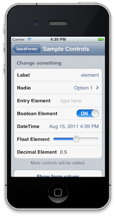
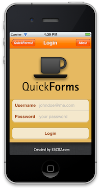
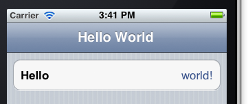

Quick and simple dialogs for iOS developers.
QuickDialog allows you to create HIG-compliant iOS forms for your apps without having to directly deal with UITableViews, delegates and data sources. Fast and efficient, you can create forms with multiple text fields, or with thousands of items with no sweat!
 
QuickDialog is inspired by the brilliant MonoTouch.Dialog library created by Miguel de Icaza, which can be found at https://github.com/migueldeicaza/MonoTouch.Dialog.
QuickDialog support many different built-in types of elements for your forms, like Entry elements, on/off elements, sliders and even simple web addresses that automatically open browsers and adress elements to open map views. For a complete list of elements, look below! The framework also is very extensible, making it simple for you to create your custom elements an cells.
And if you don’t like the basic look of controls, simply override one method and you’ll have full control of the cells being displayed. Can’t get much simpler than that!
pod 'QuickDialog'
The easiest way to do add QuickDialog to your existing project is to add it as a git SubModule, and then import the project as part of yours:
cd your-project-location
git submodule add git@github.com:escoz/QuickDialog.git
this will copy the code from github automatically for you, so you can update it in the future easily.
In Xcode:
open YOUR existing project (or create a new one)
drag and drop the QuickDialog.xcodeproj file downloaded from github previously from Finder to your project (either root or under Frameworks)
In YOUR project configuration:
in the Build Phases, Add QuickDialog (the lib, not the example app) as a Target Dependency
In the Build phases->Link binary with librarys, add these two libraries: MapKit.framework and CoreLocation.framework. - in the Link Binary With Libraries section, add the libQuickDialog.a library
In YOUR Prefix.pch file, add:
#import <QuickDialog/QuickDialog.h>
In YOUR project configuration, on the “Build Settings” tab
${PROJECT_DIR}/QuickDialog (including quotes!) and check the “Recursive” check box.-ObjC (no quotes).That should be all there is. Change the build target to “iOS Device”, and run Product->Archive. Good luck!
In order to use the QuickDialog library on your project, you’ll have to first import the code or link the project to your own.
There’s three different class types you need to know in order to use QuickDialog:
QuickDialogController – subclass of a UITableViewController that is responsible for actually displaying the dialog. For your application, you’ll very likely be creating subclasses of this class, one for each dialog you own. You’ll never really have to create objects of this type directly with alloc/init. The framework takes care of this for you.
QRootElement - think of a root element as a dialog: a collection of sections and cells that can be used to display some useful data to the user. Every QuickDialogController can only display one RootElement at a time, although that RootElement can contain other root elements inside, which causes a new controller to automatically be displayed. Elements are always grouped in sections in the root element, as you can see below.
QElement - an element object maps one-to-one map to a UITableViewCell, although it includes more functionality, like being able to read values from the cells and having multiple types. QuickDialog provides many different built-in element types, like the ButtonElement and the EntryElement, but you can also create your custom one.
QRootElement *root = [[QRootElement alloc] init];
root.title = @"Hello World";
root.grouped = YES;
QSection *section = [[QSection alloc] init];
QLabelElement *label = [[QLabelElement alloc] initWithTitle:@"Hello" Value:@"world!"];
[root addSection:section];
[section addElement:label];
UINavigationController *navigation = [QuickDialogController controllerWithNavigationForRoot:root];
[self presentModalViewController:navigation animated:YES];
The code above will create the form below:

Pretty simple, right?!
Out of the box, QuickDialog provides you many different elements you can use on your app:
All those elements contain a few parameters that can be used:
Sections are simple groupings of elements. Sections by default have a few properties:
Besides those properties, a few custom section types can be used:
Styling the cells in your dialogs is easy with QuickDialog. To be able to change the background, fonts and colors of your cells, simply implement the QuickDialogStyleProvider protocol, and set the proper delegate class you your table view. You can see an example of that on the LoginController of the demo app: https://github.com/escoz/QuickDialog/blob/master/sample/LoginController.m.
There’s only one method you need to implement for that protocol: -cell:willAppearForElement:element atIndexPath:, which will be called for every cell displayed, and allows you to change the cells as much as you would like.
Using custom dialog controllers are a very simple and effective way of having full control on how your dialog is displayed. To do this, simple create a subclass of the QuickDialogController class. You can use this subclass to do things like change the looks and behavior of the tableview, implement styling, and implement actions that get called when elements are executed.
Instead of directly creating your custom controller objects, though, RootElement objects can be told which controller they use, and they’ll automatically create controllers of that type as needed. So, for example, if you have a new class of type MyDialogController that is a subclass of the QuickDialogController, you can define the root as follow:
QRootElement *root = [[QRootElement alloc] init];
root.title = @"Hello World";
root.controllerName = @"MyDialogController";
// ... define your root element content here
MyDialogController *myDialogController = [QuickDialogController controllerForRoot:root];
[self presentModalViewController:navigation animated:YES];
The controller, and all the controllers necessary to display that root element will automatically be of the type you defined!